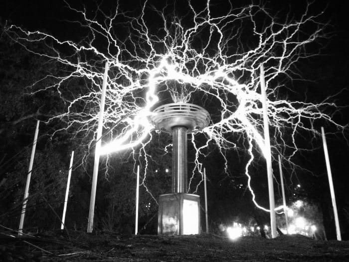
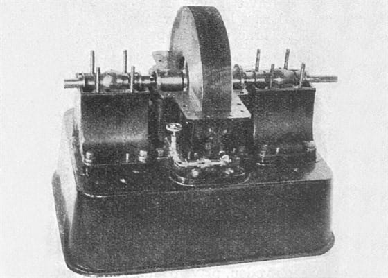
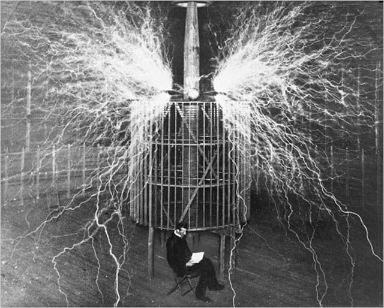
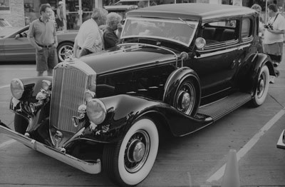

Открытия и научные работы Николы Теслы
Переменный ток
В 1888 году Никола Тесла запатентовал систему переменного тока. Система состояла из
трансформатора, генератора,
счетчиков, двигателя индукционного и линий передач. Она работала по принципу многофазности, и
это было главной
особенностью. Промышленный магнат Джордж Вестингауз за 1 миллион долларов выкупил патент на
изобретение Теслы. Также он
пообещал платить по одному доллару за каждую лошадиную силу генераторов, находящихся на
территории США и работающих по
системе Теслы. После этого генераторы на переменном токе начали производиться в больших
количествах и обретали всё
большую популярность. Сейчас уже невозможно представить жизнь без них.

Рентгеновские лучи
В список великих открытий ученого Теслы входит рентгеновское излучение. В 1887 он проводил
эксперименты с электричеством
и обнаружил лучи, невидимые для невооруженного глаза, которые оставляли следы на металле. Эти
лучи могли проходить через
некоторые предметы и
обнаруживать другие. Это величайшее открытие Никола Тесла не запатентовал, но в 1895 году
Вильгельм Рентген тоже
обнаружил эту особенность и создал рентгеновский аппарат.

Катушка Теслы
Это изобретение представляло собой трансформатор, который мог создавать молнии вокруг себя.
Устройство работало по
принципу резонатора. Катушки задумывались Теслой для передачи энергии без использования
проводов.

Дистанционное управление
Это ещё одно открытие, которое сделал Тесла первым, но часто эту заслугу отдают русскому физику
Попову или Гульельмо
Маркони. Ещё в 1898 году Тесла демонстрировал радиоуправляемую лодку на электротехнической
выставке. Лодка находилась на
поверхности озера, а Тесла – на берегу, и пультом он передавал сигнал лодке.

Беспроводная передача энергии
В 1901 году Тесла придумал идею башен, которые не соединены проводами, но могут передавать между
собой информацию. Эта
идея напоминает современный Интернет. В 1903 году Тесла, создав предварительно башни, начал свой
эксперимент: он
создавал разряды, от которых небо освещалось светом, свечение заполняло атмосферу. Но эти
эксперименты не были
закончены, спонсор Теслы прекратил финансирование. После этого он решил продолжать работу
сам.Есть теория, что
Тунгусский метеорит, который упал в 1908 году и оставил в месте своего падения выжженную землю,
был экспериментом Теслы.
Во время падения его башня была работоспособна, поэтому есть версия, что это был не метеорит, а
шаровая молния. Это
утверждение не лишено смысла: Тесла мог создавать разряды, а на месте падения метеорита не было
обнаружено никаких
внеземных частиц.

Машина землетрясений
Изобретение Теслы под названием осциллятор колебаний могло создавать колебания, которые
можно было настроить на частоту
вибрации любого предмета. Под этим предметом начинались подземные толчки. Таким образом
Тесла чуть не уничтожил свою
лабораторию. Из-за опасности этого изобретения оно было уничтожено самим ученым.

Луч смерти
Примерно в 1930 году Тесла создавал оружие, имевшее название «Луч смерти». Это оружие
предназначалось для защиты границ
государства. Луч должен был работать на новом типе энергии. Есть мнение, что это оружие было
продано Советскому Союзу,
но никаких доказательств нет.

«Колдовской» автомобиль
Этот эксперимент заключался в следующем: Тесла снял с автомобиля бензиновый двигатель, установил
на его место
электрический. Ещё он создал загадочную коробочку из проводов, ламп и резисторов и установил её
внутри автомобиля. После
этого сел в автомобиль и поехал. Каким образом работала такая система, неизвестно до сих пор.
Увидев автомобиль,
двигающийся без привычного бензинового двигателя, зрители назвали Теслу колдуном.
